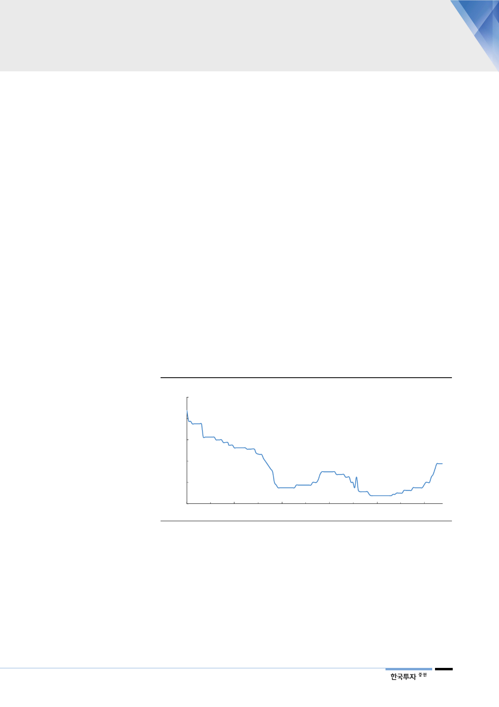

II. 긍정적인 두 가지 흐름
중국은 벤치마크가 아니라
spot 제련수수료 적용
1. 중국 spot 제련수수료 상승
고려아연을 포함한 글로벌 제련사와 글로벌 광산간의 아연 제련수수료는 1년간
변하지 않는다. 반면 중국 제련사들은 대부분 연간 제련수수료가 아닌 비정기적
으로 변동되는 spot 제련수수료가 적용된다. 40년 넘게 이어진 글로벌 광산과 제
련사의 계약 관행에서 배제되고 있다. 중국은 아연 정광이 부족하고 수입량이 많
기 때문에 광산들의 bargaining power가 다른 어떤 지역보다 높다. 이에 글로벌
광산들이 중국에는 벤치마크 제련수수료를 적용하지 않고 이보다 낮은 제련수수
료를 책정하기 위해 벤치마크 제련수수료를 적용하지 않고 있다.
7~8월 중국 spot 제련수수료
급등
이에 중국 spot 제련수수료는 단기적으로 글로벌 정광 수급의 척도가 되고 있다.
중국 spot 제련수수료가 하락하면 벤치마크 제련수수료가 하락한다. 따라서
2016년 이후 중국 spot 제련수수료의 급락은 제련업에 대한 투자 심리에 부정적
이었다. 그러나 최근 중국 spot 제련수수료가 급등했다. 연초에 15달러에 불과했
지만 최근 75달러까지 상승했다. 2018년 연간 벤치마크 제련수수료 147달러에
비하면 절반밖에 안 되지만 7~8월에 급등세를 보였다. 단기적으로는 정광 수급
이 제련사에 유리하게 변했다고 볼 수 있다.
[그림 4] 중국 아연 spot 제련수수료
(달러/톤)
200
160
150
120
80
40
0
Jan-16
Jul-16
자료: WinD, 한국투자증권
Jan-17
Jul-17
75
15
Jan-18
Jul-18
3